家里那台老电视、吃灰的机顶盒、抽屉里的旧手机——硬件还没坏，却卡在一个塞满广告的系统里。5xingTV 为它们做了专门优化：把有限的 CPU 和内存留给播放本身。
- 播放器独立进程，解码异常不拖垮应用
- 老机型自动降低 EPG / 台标 / 测速等后台负载
- 分级播放缓冲，减少老电视卡顿
- 定时关闭：到点只停应用，不关电视
- 频道备注、收藏、最近播放，给父母装台刚刚好
适配重点为 Android 6/7 与 MStar（如 6A938）平台，不构成对所有旧机型效果的承诺。
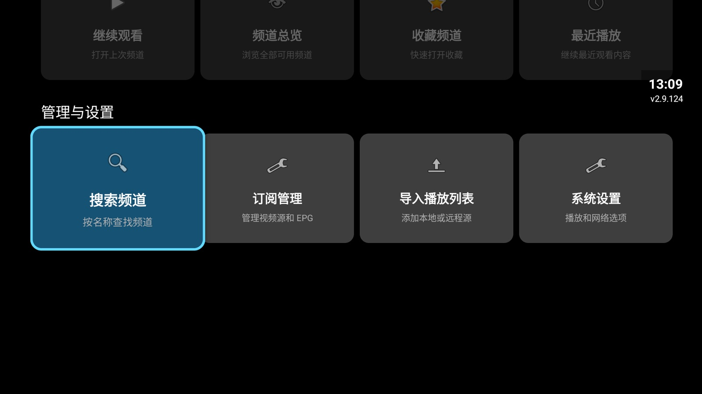
FREE · NO ADS · OPEN SOURCE
面向低配置设备的高性能无广告 IPTV 播放器
不内置任何直播源的本地播放器，为老电视、老盒子、旧手机做了深度优化。免费、无广告、Apache-2.0 开源协议分发。
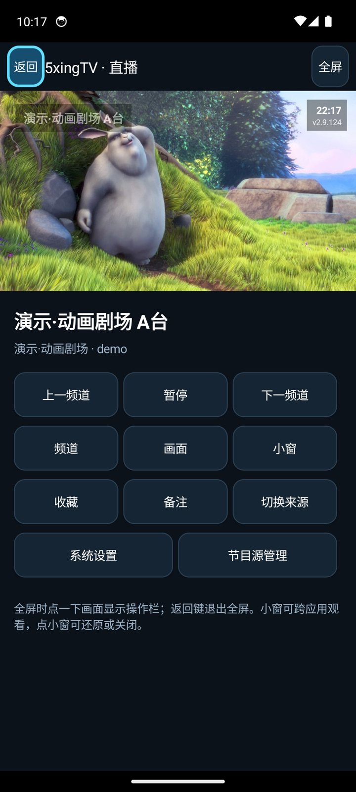
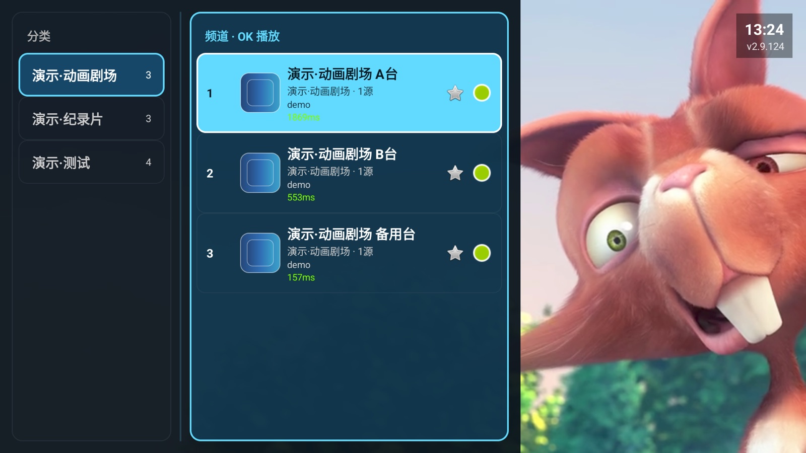
每一项都有代码依据，针对真实的使用场景打磨。
针对 Android 6/7、MStar 6A938 等老平台优化缓冲、解码与后台负载；播放器独立进程隔离崩溃。
D-pad 导航、频道抽屉、快捷操作面板、高对比焦点，全程不需要触摸。
Android 8+ 小窗带播放/暂停按钮，回消息不中断直播；角标随窗口自适应缩放。
电视展示二维码，手机浏览器直接编辑节目源并同步回电视，无需电脑。
左右键切换备用来源；播放失败自动换台（默认关闭，用户可控）。
数据全存本机，诊断上报默认留空；免费、无广告、Apache-2.0 开源。
家里那台老电视、吃灰的机顶盒、抽屉里的旧手机——硬件还没坏，却卡在一个塞满广告的系统里。5xingTV 为它们做了专门优化：把有限的 CPU 和内存留给播放本身。
适配重点为 Android 6/7 与 MStar（如 6A938）平台，不构成对所有旧机型效果的承诺。

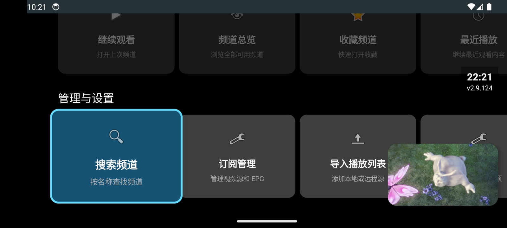
旧手机别扔，装上 5xingTV 就是床头直播机。竖屏普通模式、横屏全屏、系统画中画三种形态复用同一个播放器实例；Android 8+ 的 PiP 小窗自带播放/暂停按钮，角标随窗口大小自适应缩放。
电视和手机装同一个 APK：在电视上打开"手机编辑节目源"二维码，手机扫码即可在浏览器里增删节目源并同步回电视——给远程的父母改台单，也不用电脑。
全部界面截图来自 Android TV 14 与手机模拟器实机运行，演示频道均为公开测试流。
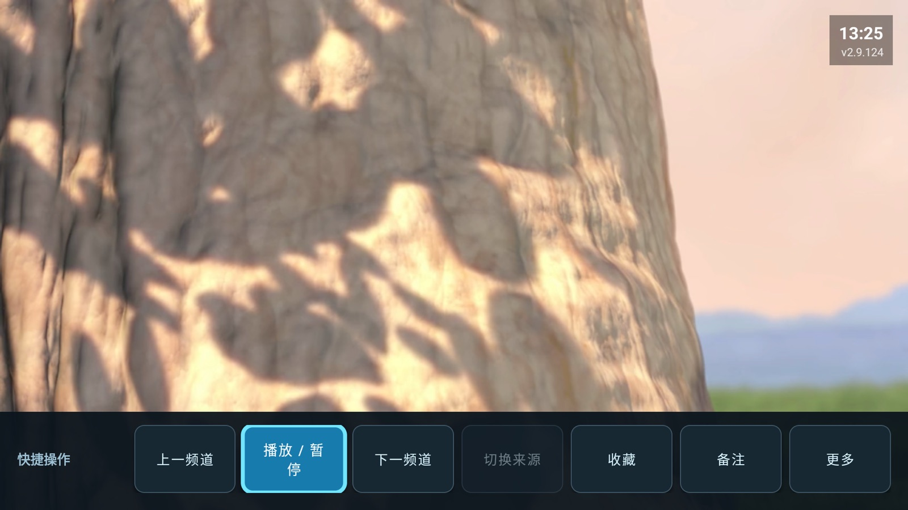
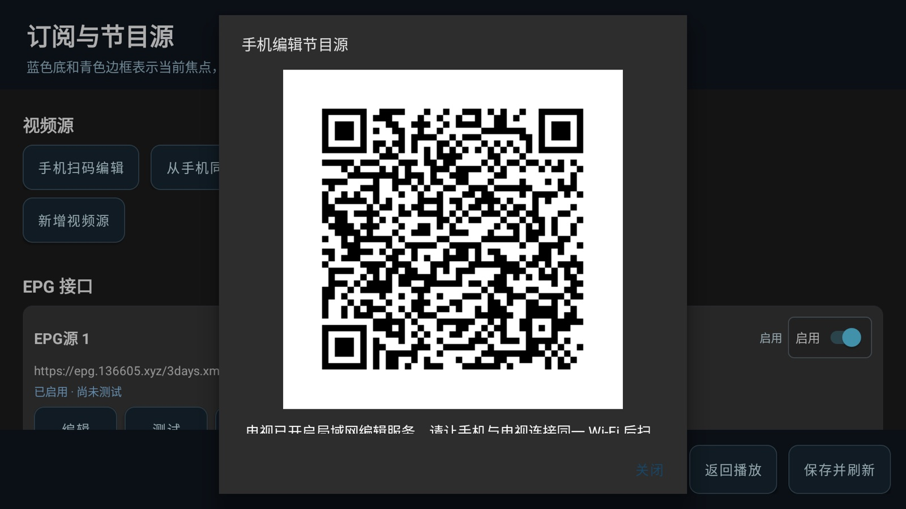
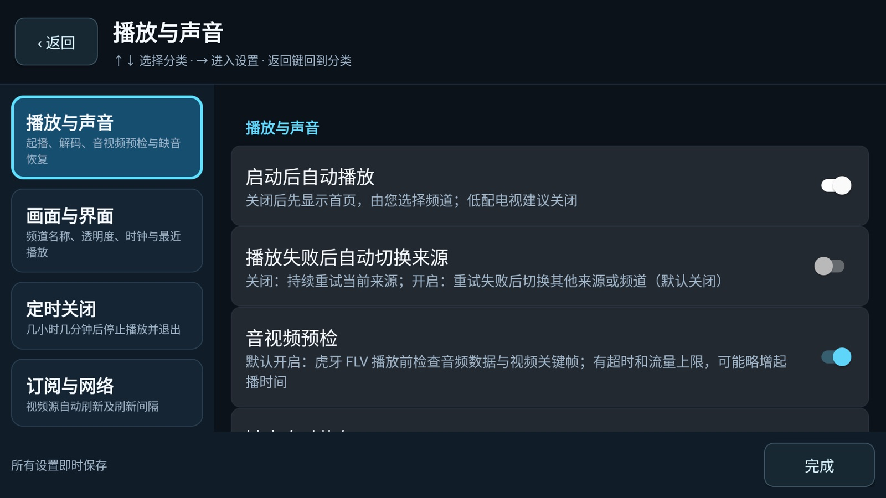
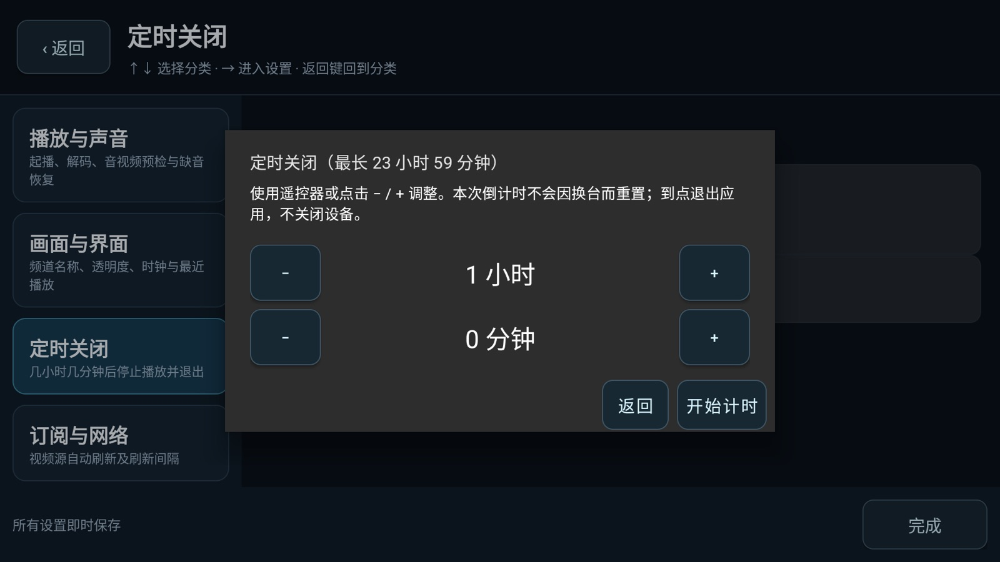
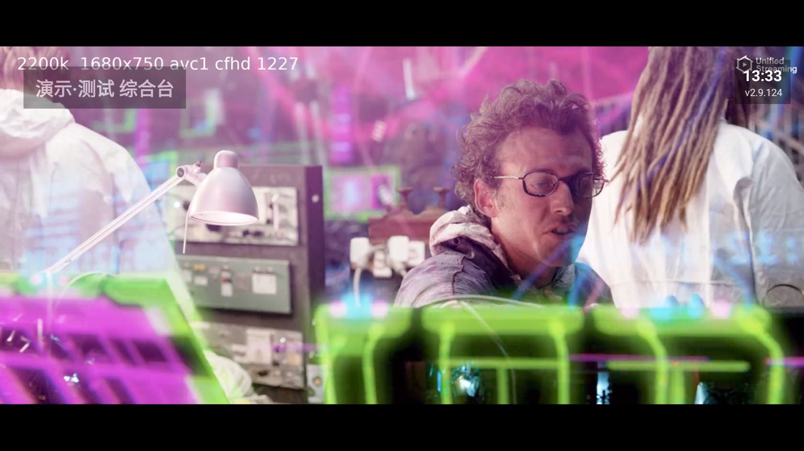
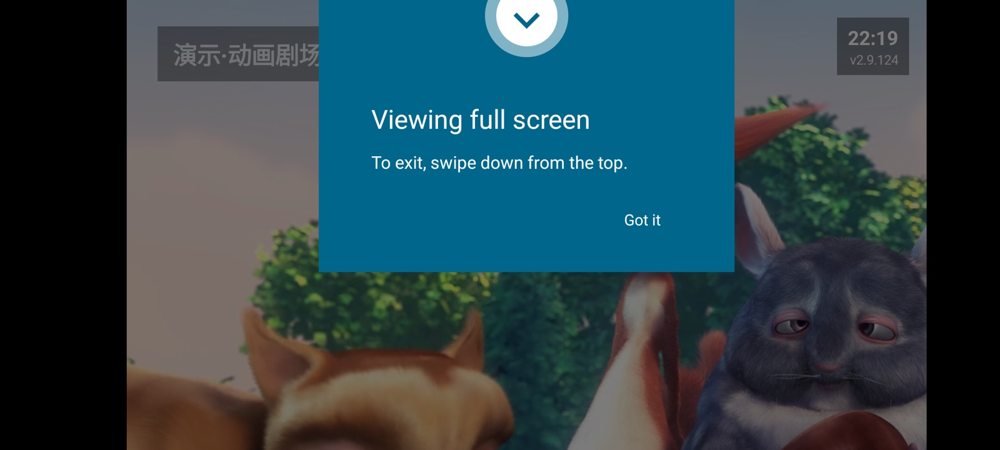
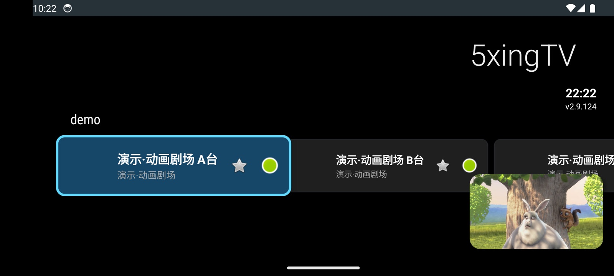
adb install -r app-debug.apk 安装；最低 Android 5.0（API 21）· 画中画需 Android 8.0+ · Android TV / 盒子 / 手机均可
以下为社区维护的第三方项目，仅作链接推荐，与本项目无关。使用请自行确认授权与合规。
| 项目 | 说明 |
|---|---|
| iptv-org/iptv | 全球公开频道收录项目，按国家/地区/语言分类，社区规模最大 |
| vbskycn/iptv | 国内常用直播源每日更新，支持 IPv4/IPv6 双栈访问 |
| YanG-1989/m3u | 直播源聚合仓库，持续维护更新 |
| Guovin/iptv-api | 直播源自动采集/测速/更新工具，可自建专属播放列表 |
5xingTV 是"空"播放器，不内置任何直播源。请进入"订阅管理"或"导入播放列表"，添加你有权使用的 M3U/M3U8 地址后再观看。
Android 5.0 及以上的 Android TV、机顶盒、手机均可。针对 Android 6/7 与 MStar 6A938 等老平台有专门优化；画中画需要 Android 8.0+。
当前发布为 Debug 签名 APK。若设备上已有其他签名的同包名应用，请先卸载旧版，再安装本应用。
三种方式：① 电视上"导入播放列表"输入 URL；② 从本地文件导入 M3U/JSON；③ 电视打开"手机扫码编辑"二维码，手机浏览器里编辑并同步——全程不需要电脑。
频道、备注、收藏、播放历史全部保存在设备本地；诊断上报默认不配置服务地址，只有你自行填写后才会启用。
没有开屏、插页或悬浮广告，也不会推送营销消息。项目以 Apache-2.0 开源协议分发，源码可查。
针对老平台做了播放缓冲分级与后台负载收敛，EPG/台标/测速让位于播放；播放器还运行在独立进程中，解码异常不影响主界面。实际效果因机型与节目流而异。
同名频道多源合并后，左右键在备用来源之间切换；播放失败自动换台功能默认关闭，可在设置中开启。
不会。定时关闭是一次性倒计时，到点只停止并退出本应用的播放，不会关闭电视或其他应用。
欢迎提交 GitHub Issues，附上设备型号、系统版本与问题描述，会尽快跟进。
5xingTV（AndroidTVIptvPlayer）© 2026 marui9819，基于 Apache License 2.0 分发。再分发或二次开发须保留 NOTICE 声明并注明出处；如经修改，须标注已作修改。
本应用不内置任何直播源；请只添加你拥有、获授权或当地法律允许访问的来源。虎牙、斗鱼等站点适配可能随其接口变化而失效，本项目不保证第三方服务持续可用，也不对用户添加的第三方内容负责。
反馈与讨论：GitHub Issues · 源码：GitHub 仓库